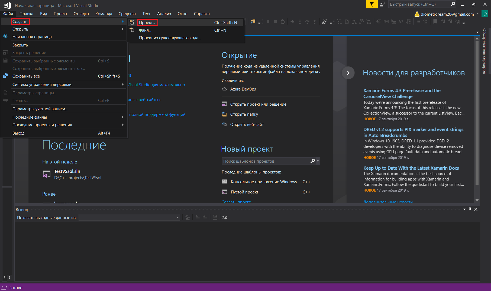
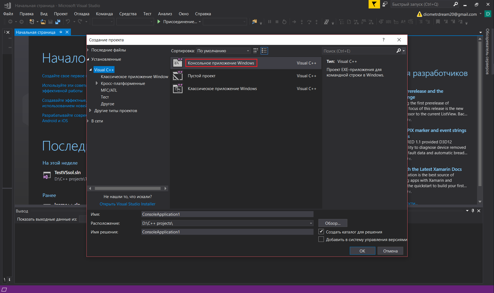
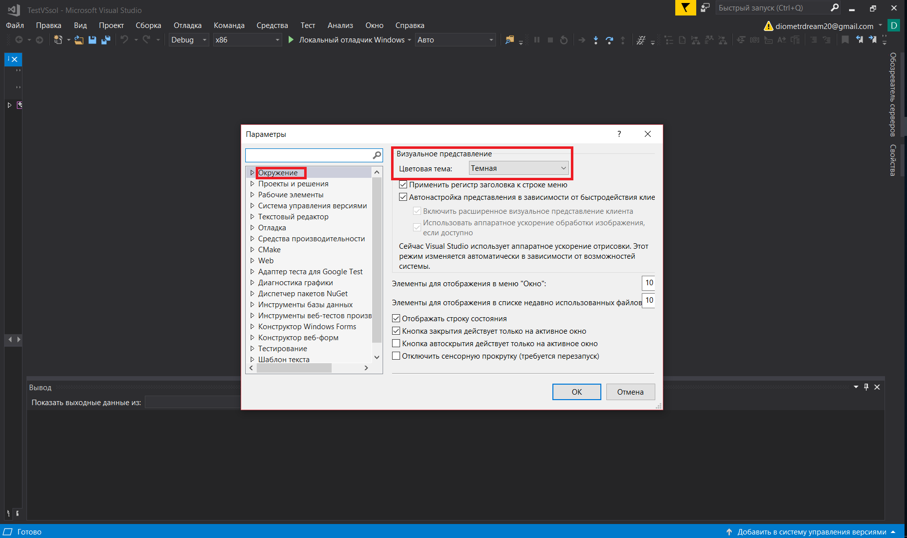
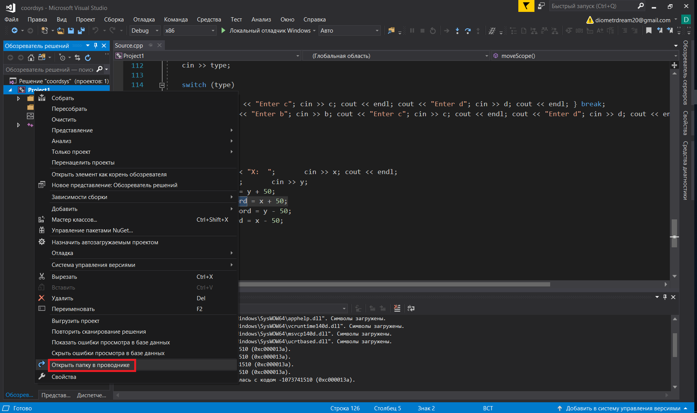
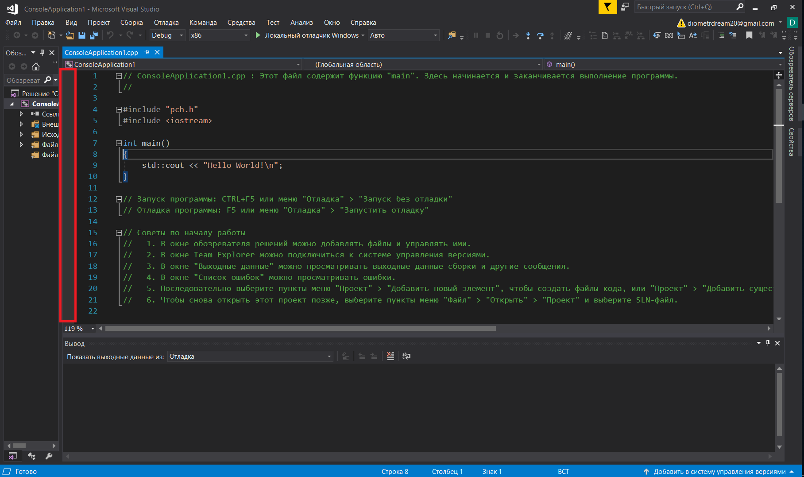

МИНИСТЕРСТВО НАУКИ И ВЫСШЕГО ОБРАЗОВАНИЯ РОССИЙСКОЙ ФЕДЕРАЦИИ
Федеральное государственное автономное образовательное учреждение высшего образования
"КРЫМСКИЙ ФЕДЕРАЛЬНЫЙ УНИВЕРСИТЕТ им. В. И. ВЕРНАДСКОГО"
ФИЗИКО-ТЕХНИЧЕСКИЙ ИНСТИТУТ
Кафедра компьютерной инженерии и моделирования
Отчёт по лабораторной работе №1
по дисциплине "Программирование"
студента 1 курса группы ПИ-б-о-191(2)
Кравченко Дмитрия Сергеевича
направления подготовки 09.03.04 "Программная инженерия"
Научный руководитель
старший преподаватель кафедры
компьютерной инженерии и моделирования |
(оценка) |
Чабанов В.В. |
Симферополь, 2019
Цель: изучить основные возможности создания и отладки программ в IDE MS Visual Studio.
Ход работы:
Ответ на вопрос №1:
Чтобы создать консольное приложение C++ нужно открыть пункт главного меню с названием Файл.
В появившемся списке нужно выбрать пункт Создать -> Проект.
В появившемся диалоговом окне нужно выбрать пункт "Консольное приложение Windows". Это диалоговое окно так же можно вызвать оновременно нажав Ctrl + Shift + N.
Последним пунктом нужно нажать клавишу Enter.

Рис. 1. Пункт Файл главного меню

Рис. 2. Команда Создать -> Проект

Рис. 3. Диалоговое окно создания проектов, выбор консольного приложения
Ответ на вопрос №2:
Чтобы изменить цветовую схему редактора нужно вызвать диалоговое окно настроек. Это можно сделать из пункта главного меню Отладка.
В открывшемся диалоговом окне нужно выбрать пункт Окружение.
В разделе Визуальное представление можно менять цветовую схему среды.

Рис. 4. Пункт Отладка главного меню и пункт Параметры выпадающего меню

Рис. 5. Пункт Окружение диалогового окна и раздел Визуальное представление
Ответ на вопрос №3:
Чтобы закоментировать фрагмент кода в Visual Studio нужно выделить фрагмент кода и последовательно нажать две комбинации клавиш: Ctrl + K , Ctrl + C .
Ответ на вопрос №4:
Для того чтобы открыть папку проекта в проводнке Windows средствами Visual Studio нужно вызвать контекстное меню нажатием правой кнопки мыши на название соответствующего проекта в обозревателе решений.

Рис. 6. Обозреватель решений

Рис. 7. Команда Показать в проводнике
Ответ на вопрос №5:
Формат файлов решений - .sln
Ответ на вопрос №6:
Чтобы запустить код без отладки нужно:
1) В пункте главного меню Отладка выбрать команду Запуск без отладки.
2) Нажать комбинацию клавиш Ctrl + F5.

Рис. 8. Первый способ
Ответ на вопрос №7:
Чтобы запустить код в режиме отладки нужно:
1) В пункте главного меню Отладка выбрать команду Запустить отладку.
2) Нажать клавишуF5.

Рис. 8. Первый способ
Ответ на вопрос №8:
Чтобы поставить\убрать точку останова(breakpoint) нужно нажать левой кнопкой мыши в выделеной на изображении области напротив нужной строки.

Рис. 8. Область для установки breakpoint-ов
Ответ на вопрос №9:
В пятой строке переменная i имеет значение -858993460.
В шестой строке переменная i имеет значение 5
Ответ на вопрос №10:
В пятой строке переменная i имеет значение -9.2559631349317831e+61.
В шестой строке переменная i имеет значение 5
Вывод: в ходе проведённой лабораторной работы мы изучили основные возможности создания и отладки программ IDE MS Visual Sudio